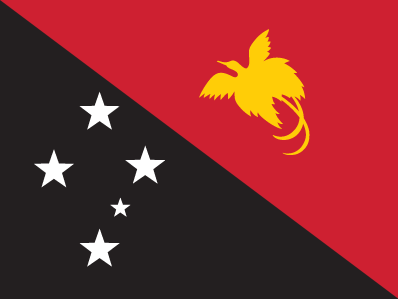
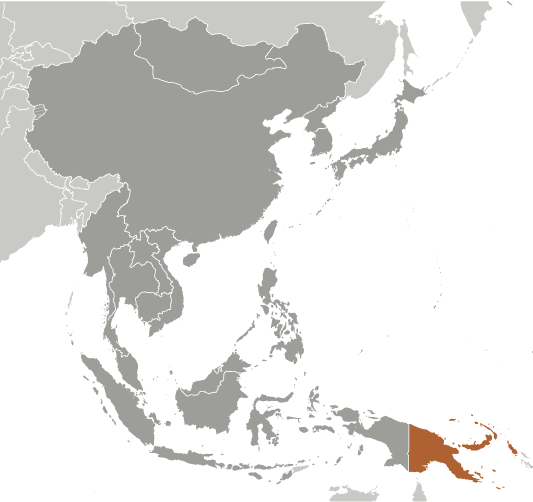
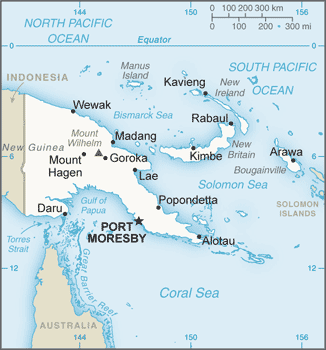

East & Southeast Asia :: PAPUA NEW GUINEA
Introduction :: PAPUA NEW GUINEA
-
The eastern half of the island of New Guinea - second largest in the world - was divided between Germany (north) and the UK (south) in 1885. The latter area was transferred to Australia in 1902, which occupied the northern portion during World War I and continued to administer the combined areas until independence in 1975. A nine-year secessionist revolt on the island of Bougainville ended in 1997 after claiming some 20,000 lives. Since 2001, Bougainville has experienced autonomy. Under the terms of a peace accord, 2015 is the year that a five-year window opens for a referendum on the question of independence.
Geography :: PAPUA NEW GUINEA
-
Oceania, group of islands including the eastern half of the island of New Guinea between the Coral Sea and the South Pacific Ocean, east of Indonesia6 00 S, 147 00 EOceaniatotal: 462,840 sq kmland: 452,860 sq kmwater: 9,980 sq kmcountry comparison to the world: 55slightly larger than Californiatotal: 824 kmborder countries (1): Indonesia 824 km5,152 kmmeasured from claimed archipelagic baselinesterritorial sea: 12 nmcontinental shelf: 200-m depth or to the depth of exploitationexclusive fishing zone: 200 nmtropical; northwest monsoon (December to March), southeast monsoon (May to October); slight seasonal temperature variationmostly mountains with coastal lowlands and rolling foothillsmean elevation: 667 melevation extremes: lowest point: Pacific Ocean 0 mhighest point: Mount Wilhelm 4,509 mgold, copper, silver, natural gas, timber, oil, fisheriesagricultural land: 2.6%arable land 0.7%; permanent crops 1.5%; permanent pasture 0.4%forest: 63.1%other: 34.3% (2011 est.)0 sq km (2012)active volcanism; situated along the Pacific "Ring of Fire"; the country is subject to frequent and sometimes severe earthquakes; mud slides; tsunamisvolcanism: severe volcanic activity; Ulawun (elev. 2,334 m), one of Papua New Guinea's potentially most dangerous volcanoes, has been deemed a Decade Volcano by the International Association of Volcanology and Chemistry of the Earth's Interior, worthy of study due to its explosive history and close proximity to human populations; Rabaul (elev. 688 m) destroyed the city of Rabaul in 1937 and 1994; Lamington erupted in 1951 killing 3,000 people; Manam's 2004 eruption forced the island's abandonment; other historically active volcanoes include Bam, Bagana, Garbuna, Karkar, Langila, Lolobau, Long Island, Pago, St. Andrew Strait, Victory, and Waiowarain forest subject to deforestation as a result of growing commercial demand for tropical timber; pollution from mining projects; severe droughtparty to: Antarctic Treaty, Biodiversity, Climate Change, Climate Change-Kyoto Protocol, Desertification, Endangered Species, Environmental Modification, Hazardous Wastes, Law of the Sea, Marine Dumping, Ozone Layer Protection, Ship Pollution, Tropical Timber 83, Tropical Timber 94, Wetlandssigned, but not ratified: none of the selected agreementsshares island of New Guinea with Indonesia; generally east-west trending highlands break up New Guinea into diverse ecoregions; one of world's largest swamps along southwest coast
People and Society :: PAPUA NEW GUINEA
-
6,791,317 (July 2016 est.)country comparison to the world: 106noun: Papua New Guinean(s)adjective: Papua New GuineanMelanesian, Papuan, Negrito, Micronesian, PolynesianTok Pisin (official), English (official), Hiri Motu (official), some 836 indigenous languages spoken (about 12% of the world's total); most languages have fewer than 1,000 speakersnote: Tok Pisin, a creole language, is widely used and understood; English is spoken by 1%-2%; Hiri Motu is spoken by less than 2%Roman Catholic 27%, Protestant 69.4% (Evangelical Lutheran 19.5%, United Church 11.5%, Seventh-Day Adventist 10%, Pentecostal 8.6%, Evangelical Alliance 5.2%, Anglican 3.2%, Baptist 2.5%, other Protestant 8.9%), Baha'i 0.3%, indigenous beliefs and other 3.3% (2000 census)0-14 years: 33.93% (male 1,173,034/female 1,131,387)15-24 years: 19.86% (male 683,474/female 665,245)25-54 years: 36.65% (male 1,281,641/female 1,207,658)55-64 years: 5.39% (male 185,846/female 180,255)65 years and over: 4.16% (male 143,851/female 138,926) (2016 est.)total dependency ratio: 67.1%youth dependency ratio: 62.1%elderly dependency ratio: 5%potential support ratio: 19.9% (2015 est.)total: 22.9 yearsmale: 23 yearsfemale: 22.8 years (2016 est.)country comparison to the world: 1701.75% (2016 est.)country comparison to the world: 6524 births/1,000 population (2016 est.)country comparison to the world: 606.5 deaths/1,000 population (2016 est.)country comparison to the world: 1450 migrant(s)/1,000 population (2016 est.)country comparison to the world: 93urban population: 13% of total population (2015)rate of urbanization: 2.12% annual rate of change (2010-15 est.)PORT MORESBY (capital) 345,000 (2015)at birth: 1.05 male(s)/female0-14 years: 1.04 male(s)/female15-24 years: 1.03 male(s)/female25-54 years: 1.06 male(s)/female55-64 years: 1.03 male(s)/female65 years and over: 1.06 male(s)/femaletotal population: 1.04 male(s)/female (2016 est.)215 deaths/100,000 live births (2015 est.)country comparison to the world: 51total: 37.4 deaths/1,000 live birthsmale: 40.9 deaths/1,000 live birthsfemale: 33.8 deaths/1,000 live births (2016 est.)country comparison to the world: 52total population: 67.2 yearsmale: 65 yearsfemale: 69.5 years (2016 est.)country comparison to the world: 1693.1 children born/woman (2016 est.)country comparison to the world: 5432.4% (2006/07)4.3% of GDP (2014)country comparison to the world: 1370.06 physicians/1,000 population (2008)improved:urban: 88% of populationrural: 32.8% of populationtotal: 40% of populationunimproved:urban: 12% of populationrural: 67.2% of populationtotal: 60% of population (2015 est.)improved:urban: 56.4% of populationrural: 13.3% of populationtotal: 18.9% of populationunimproved:urban: 43.6% of populationrural: 86.7% of populationtotal: 81.1% of population (2015 est.)0.79% (2015 est.)country comparison to the world: 5340,100 (2015 est.)country comparison to the world: 69900 (2015 est.)country comparison to the world: 69degree of risk: very highfood or waterborne diseases: bacterial diarrhea, hepatitis A, and typhoid fevervectorborne diseases: dengue fever and malarianote: active local transmission of Zika virus by Aedes species mosquitoes has been identified in this country (as of August 2016); it poses an important risk (a large number of cases possible) among US citizens if bitten by an infective mosquito; other less common ways to get Zika are through sex, via blood transfusion, or during pregnancy, in which the pregnant woman passes Zika virus to her fetus (2016)25.5% (2014)country comparison to the world: 11527.9% (2011)country comparison to the world: 19NAdefinition: age 15 and over can read and writetotal population: 64.2%male: 65.6%female: 62.8% (2015 est.)the indigenous population of Papua New Guinea (PNG) is one of the most heterogeneous in the world; PNG has several thousand separate communities, most with only a few hundred people; divided by language, customs, and tradition, some of these communities have engaged in low-scale tribal conflict with their neighbors for millennia; the advent of modern weapons and modern migrants into urban areas has greatly magnified the impact of this lawlessness
Government :: PAPUA NEW GUINEA
-
conventional long form: Independent State of Papua New Guineaconventional short form: Papua New Guinealocal short form: Papuaniuginiformer: Territory of Papua and New Guineaabbreviation: PNGetymology: the word "papua" derives from the Malay "papuah" describing the frizzy hair of the Melanesians; Spanish explorer Ynigo ORTIZ de RETEZ applied the term "Nueva Guinea" to the island of New Guinea in 1545 after noting the resemblance of the locals to the peoples of the Guinea coast of Africaparliamentary democracy (National Parliament) under a constitutional monarchy; a Commonwealth realmname: Port Moresbygeographic coordinates: 9 27 S, 147 11 Etime difference: UTC+10 (15 hours ahead of Washington, DC, during Standard Time)20 provinces, 1 autonomous region*, and 1 district**; Bougainville*, Central, Chimbu, Eastern Highlands, East New Britain, East Sepik, Enga, Gulf, Hela, Jiwaka, Madang, Manus, Milne Bay, Morobe, National Capital**, New Ireland, Northern, Southern Highlands, Western, Western Highlands, West New Britain, West Sepik16 September 1975 (from the Australian-administered UN trusteeship)Independence Day, 16 September (1975)adopted 15 August 1975, effective at independence 16 September 1975; amended many times, last in 2013; note - in September 2015, the Supreme Court nullified the 2013 constitutional amendment that increased the grace period on motions of no confidence (2016)mixed legal system of English common law and customary lawhas not submitted an ICJ jurisdiction declaration; non-party state to the ICCtcitizenship by birth: nocitizenship by descent only: at least one parent must be a citizen of Papua New Guineadual citizenship recognized: noresidency requirement for naturalization: 8 years18 years of age; universalchief of state: Queen ELIZABETH II (since 6 February 1952); represented by Governor Michael OGIO (since 25 February 2011)head of government: Prime Minister Peter Paire O'NEILL (since 2 August 2011); Deputy Prime Minister Leo DION (since 9 August 2012)cabinet: National Executive Council appointed by the governor general on the recommendation of the prime ministerelections/appointments: the monarchy is hereditary; governor general nominated by the National Parliament and appointed by the chief of state; following legislative elections, the leader of the majority party or majority coalition usually appointed prime minister by the governor general pending the outcome of a National Parliament voteelection results: Peter Paire O'NEILL (PNC) elected prime minister; National Parliament vote - 94 to 12description: unicameral National Parliament (111 seats; members directly elected in single-seat constituencies - 91 local and 20 provincial - by majority preferential vote; members serve 5-year terms); note - the constitution allows up to 126 seatsnote: 14 other parties won 3 or fewer seats; association with political parties is fluidelections: last held from 23 June 2012 to 27 July 2012 (next to be held in June 2017)election results: percent of vote by party - NA; seats by party - People's National Congress Party 27, Triumph Heritage Empowerment Party 12, PNG Party 8, National Alliance Party 7, United Resources Party 7, People's Party 6, People's Progress Party 6, other 22, independent 16highest court(s): Supreme Court (consists of the chief justice, deputy chief justice, and 28 judges); National Courts (13 courts located in the province capitals, with a total of 19 resident judges)judge selection and term of office: Supreme Court chief justice appointed by the governor-general upon advice of the National Executive Council (cabinet) after consultation with the National Justice Administration Minister; deputy chief justice and other justices appointed by the Judicial and Legal Services Commission, a 5-member body to include the Supreme Court chief and deputy chief justices, the chief ombudsman, and a member of the National Parliament; full time citizen judges appointed for 10-year renewable terms; non-citizen judges initially appointed for 3-year renewable terms and after first renewal until age 70; appointment and tenure of National Court resident judges NAsubordinate courts: district, village, and juvenile courtsNational Alliance Party or NA [Patrick PRUAITCHI]Papua New Guinea Party or PNGP [Beldan NAMAH]People's National Congress Party or PNC [Peter Paire O'NEILL]People's Party or PP (merged with PNC)People's Progress Party or PPP [Sir Julius CHAN]Triumph Heritage Empowerment Party or THEUnited Resources Party or URP [William DUMA]note: as of 13 March 2012, 41 political parties were registeredCentre for Environment Law and Community Rights or Celcor [Damien ASE]Community Coalition Against CorruptionNational Council of WomenTransparency International Papau New Guinea or TI PNG (chapter of Transparency International)ACP, ADB, AOSIS, APEC, ARF, ASEAN (observer), C, CD, CP, EITI (candidate country), FAO, G-77, IAEA, IBRD, ICAO, ICRM, IDA, IFAD, IFC, IFRCS, IHO, ILO, IMF, IMO, Interpol, IOC, IOM, IPU, ISO (correspondent), ITSO, ITU, MIGA, NAM, OPCW, PIF, Sparteca, SPC, UN, UNCTAD, UNESCO, UNIDO, UNMISS, UNWTO, UPU, WCO, WFTU (NGOs), WHO, WIPO, WMO, WTOchief of mission: Ambassador Rupa Abraham MALINA (since 10 March 2014)chancery: 1779 Massachusetts Avenue NW, Suite 805, Washington, DC 20036telephone: [1] (202) 745-3680FAX: [1] (202) 745-3679chief of mission: Ambassador Catherine EBERT-GRAY (since 23 February 2016); note - also accredited to the Solomon Islands and Vanuatuembassy: Douglas Street, Port Moresby, N.C.D.mailing address: 4240 Port Moresby Place, US Department of State, Washington DC 20521-4240telephone: [675] 321-1455FAX: [675] 321-3423divided diagonally from upper hoist-side corner; the upper triangle is red with a soaring yellow bird of paradise centered; the lower triangle is black with five, white, five-pointed stars of the Southern Cross constellation centered; red, black, and yellow are traditional colors of Papua New Guinea; the bird of paradise - endemic to the island of New Guinea - is an emblem of regional tribal culture and represents the emergence of Papua New Guinea as a nation; the Southern Cross, visible in the night sky, symbolizes Papua New Guinea's connection with Australia and several other countries in the South Pacificbird of paradise; national colors: red, blackname: "O Arise All You Sons"lyrics/music: Thomas SHACKLADYnote: adopted 1975
Economy :: PAPUA NEW GUINEA
-
Papua New Guinea (PNG) is richly endowed with natural resources, but exploitation has been hampered by rugged terrain, land tenure issues, and the high cost of developing infrastructure. The economy has a small formal sector, focused mainly on the export of those natural resources, and an informal sector, employing the majority of the population. Agriculture provides a subsistence livelihood for 85% of the people. The global financial crisis had little impact because of continued foreign demand for PNG's commodities.Mineral deposits, including copper, gold, and oil, account for nearly two-thirds of export earnings. Natural gas reserves amount to an estimated 155 billion cubic meters. A consortium led by a major American oil company is constructing a liquefied natural gas (LNG) production facility that began exporting in April 2014. As the largest investment project in the country's history, it has the potential to double GDP in the near-term and triple Papua New Guinea's export revenue. An American-owned firm also opened PNG's first oil refinery in 2004 and is building a second LNG production facility. The government faces the challenge of ensuring transparency and accountability for revenues flowing from this and other large LNG projects. In 2011 and 2012, the National Parliament passed legislation that created an offshore Sovereign Wealth Fund to manage government surpluses from mineral, oil, and natural gas projects. In recent years, the government has opened up markets in telecommunications and air transport, making both more affordable to the people.Numerous challenges still face the government of Peter O'NEILL, including providing physical security for foreign investors, regaining investor confidence, restoring integrity to state institutions, promoting economic efficiency by privatizing moribund state institutions, and maintaining good relations with Australia, its former colonial ruler. Other socio-cultural challenges could upend the economy including chronic law and order and land tenure issues.$20.47 billion (2015 est.)$18.78 billion (2014 est.)$17.3 billion (2013 est.)note: data are in 2015 US dollarscountry comparison to the world: 135$16.09 billion (2015 est.)9% (2015 est.)8.5% (2014 est.)5.5% (2013 est.)country comparison to the world: 21$2,700 (2015 est.)$2,500 (2014 est.)$2,400 (2013 est.)note: data are in 2015 US dollarscountry comparison to the world: 18038.1% of GDP (2015 est.)24% of GDP (2014 est.)-11.7% of GDP (2013 est.)country comparison to the world: 10household consumption: 52.3%government consumption: 8.4%investment in fixed capital: 10.4%investment in inventories: 0.4%exports of goods and services: 68%imports of goods and services: -39.5% (2015 est.)agriculture: 23%industry: 37.8%services: 39.2% (2015 est.)coffee, cocoa, copra, palm kernels, tea, sugar, rubber, sweet potatoes, fruit, vegetables, vanilla; poultry, pork; shellfishcopra crushing, palm oil processing, plywood production, wood chip production; mining (gold, silver, copper); crude oil and petroleum products; construction, tourism10.8% (2015 est.)country comparison to the world: 94.267 million (2015 est.)country comparison to the world: 91agriculture: 85%industry: NA%services: NA% (2005 est.)1.9% (2008 est.)1.6% (2004)country comparison to the world: 1137% (2002 est.)lowest 10%: 1.7%highest 10%: 40.5% (1996)50.9 (1996)country comparison to the world: 17revenues: $3.893 billionexpenditures: $4.981 billion (2015 est.)24.2% of GDP (2015 est.)country comparison to the world: 125-6.8% of GDP (2015 est.)country comparison to the world: 18836.9% of GDP (2015 est.)36.9% of GDP (2014 est.)country comparison to the world: 124calendar year6% (2015 est.)5.2% (2014 est.)country comparison to the world: 18514% (31 December 2010)6.92% (31 December 2009)country comparison to the world: 148.73% (31 December 2015 est.)9.38% (31 December 2014 est.)country comparison to the world: 95$4.936 billion (31 December 2015 est.)$5.181 billion (31 December 2014 est.)country comparison to the world: 100$8.085 billion (31 December 2014 est.)$7.477 billion (31 December 2013 est.)country comparison to the world: 114$6.118 billion (31 December 2015 est.)$6.125 billion (31 December 2014 est.)country comparison to the world: 116$10.71 billion (31 December 2012 est.)$8.999 billion (31 December 2011 est.)$9.742 billion (31 December 2010 est.)country comparison to the world: 74$444 million (2015 est.)-$703 million (2014 est.)country comparison to the world: 32$8.377 billion (2015 est.)$8.758 billion (2014 est.)country comparison to the world: 96oil, gold, copper ore, logs, palm oil, coffee, cocoa, crayfish, prawnsJapan 17.4%, Australia 15.9%, China 12.1% (2015)$2.267 billion (2015 est.)$4.008 billion (2014 est.)country comparison to the world: 157machinery and transport equipment, manufactured goods, food, fuels, chemicalsAustralia 25.9%, China 20%, Singapore 12.6%, Malaysia 7.2%, US 4.2%, Indonesia 4.1%, South Korea 4% (2015)$1.738 billion (31 December 2015 est.)$2.305 billion (31 December 2014 est.)country comparison to the world: 123$20.41 billion (31 December 2015 est.)$20.05 billion (31 December 2014 est.)country comparison to the world: 85$NA$NAkina (PGK) per US dollar -2.7684 (2015 est.)2.4614 (2014 est.)2.4614 (2013 est.)2.08 (2012 est.)2.371 (2011 est.)
Energy :: PAPUA NEW GUINEA
-
population without electricity: 5,568,879electrification - total population: 18%electrification - urban areas: 72%electrification - rural areas: 10% (2012)3.2 billion kWh (2014 est.)country comparison to the world: 1303 billion kWh (2014 est.)country comparison to the world: 1330 kWh (2013 est.)country comparison to the world: 1840 kWh (2013 est.)country comparison to the world: 190900,000 kW (2014 est.)country comparison to the world: 13361.1% of total installed capacity (2012 est.)country comparison to the world: 1290% of total installed capacity (2012 est.)country comparison to the world: 16730.9% of total installed capacity (2012 est.)country comparison to the world: 748% of total installed capacity (2012 est.)country comparison to the world: 4752,600 bbl/day (2015 est.)country comparison to the world: 6325,400 bbl/day (2013 est.)country comparison to the world: 5614,880 bbl/day (2013 est.)country comparison to the world: 72200 million bbl (1 January 2016 es)country comparison to the world: 6228,340 bbl/day (2013 est.)country comparison to the world: 9642,000 bbl/day (2014 est.)country comparison to the world: 1308,062 bbl/day (2013 est.)country comparison to the world: 9921,180 bbl/day (2013 est.)country comparison to the world: 1544.75 billion cu m (2014 est.)country comparison to the world: 82100 million cu m (2014 est.)country comparison to the world: 1084.65 billion cu m (2014 est.)country comparison to the world: 1660 cu m (2013 est.)country comparison to the world: 122151.3 billion cu m (1 January 2016 es)country comparison to the world: 483.7 million Mt (2013 est.)country comparison to the world: 139
Communications :: PAPUA NEW GUINEA
-
total subscriptions: 150,000subscriptions per 100 inhabitants: 2 (July 2015 est.)country comparison to the world: 137total: 3.56 millionsubscriptions per 100 inhabitants: 53 (July 2015 est.)country comparison to the world: 132general assessment: services are minimal; facilities provide radiotelephone and telegraph, coastal radio, aeronautical radio, and international radio communication servicesdomestic: access to telephone services is not widely available although combined fixed-line and mobile-cellular teledensity has increased to roughly 55 per 100 personsinternational: country code - 675; submarine cables to Australia and Guam; satellite earth station - 1 Intelsat (Pacific Ocean); international radio communication service (2015)2 TV stations, 1 commercial station operating since the late 1980s, and 1 state-run station launched in 2008; satellite and cable TV services are available; state-run National Broadcasting Corporation operates 3 radio networks with multiple repeaters and about 20 provincial stations; several commercial radio stations with multiple transmission points as well as several community stations; transmissions of several international broadcasters are accessible (2009).pgtotal: 527,000percent of population: 7.9% (July 2015 est.)country comparison to the world: 162
Transportation :: PAPUA NEW GUINEA
-
number of registered air carriers: 6inventory of registered aircraft operated by air carriers: 47annual passenger traffic on registered air carriers: 2,062,584annual freight traffic on registered air carriers: 34,827,034 mt-km (2015)P2 (2016)561 (2013)country comparison to the world: 12total: 21over 3,047 m: 12,438 to 3,047 m: 21,524 to 2,437 m: 12914 to 1,523 m: 5under 914 m: 1 (2013)total: 5401,524 to 2,437 m: 11914 to 1,523 m: 53under 914 m: 476 (2013)2 (2013)oil 264 km (2013)total: 9,349 kmpaved: 3,000 kmunpaved: 6,349 km (2011)country comparison to the world: 13811,000 km (2011)country comparison to the world: 11total: 31by type: bulk carrier 7, cargo 22, petroleum tanker 2foreign-owned: 8 (Germany 1, Malaysia 1, UAE 6) (2010)country comparison to the world: 83major seaport(s): Kimbe, Lae, Madang, Rabaul, WewakLNG terminal(s) (export): Port Moresby
Military and Security :: PAPUA NEW GUINEA
-
Papua New Guinea Defense Force (PNGDF; includes Maritime Operations Element, Air Operations Element) (2013)16 years of age for voluntary military service (with parental consent); no conscription; graduation from grade 12 required (2013)0.54% of GDP (2012)0.6% of GDP (2011)0.54% of GDP (2010)country comparison to the world: 127
Transnational Issues :: PAPUA NEW GUINEA
-
relies on assistance from Australia to keep out illegal cross-border activities from primarily Indonesia, including goods smuggling, illegal narcotics trafficking, and squatters and secessionistsrefugees (country of origin): 9,368 (Indonesia) (2015)IDPs: 6,300 (natural disasters, tribal conflict, inter-communal violence, development projects) (2015)current situation: Papua New Guinea is a source and destination country for men, women, and children subjected to sex trafficking and forced labor; foreign and Papua New Guinean women and children are subjected to sex trafficking, domestic servitude, forced begging, and street vending; parents may sell girls into forced marriages to settle debts or as peace offerings or trade them to another tribe to forge a political alliance, leaving them vulnerable to forced domestic service, or, in urban areas, they may prostitute their children for income or to pay school fees; Chinese, Malaysian, and local men are forced to labor in logging and mining camps through debt bondage schemes; migrant women from Indonesia, Malaysia, Thailand, China, and the Philippines are subjected to sex trafficking and domestic servitude at logging and mining camps, fisheries, and entertainment sitestier rating: Tier 2 Watch List - Papua New Guinea does not fully comply with the minimum standards for the elimination of trafficking; however, it is making significant efforts to do so; the Criminal Code Amendment of 2013, which prohibits all forms of trafficking was brought into force in 2014; the government also formed an anti-trafficking committee, which drafted a national action plan; despite corruption problems, trafficking-related crimes were prosecuted in village courts rather than criminal courts, resulting in restitution to the victim but no prison time for offenders; the government did not investigate, prosecute, or convict any officials or law enforcement personnel complicit in trafficking offenses; the government made no efforts to proactively identify trafficking victims, has no formal victim identification and referral mechanism, and does not provide care facilities to victims or funding to shelters run by NGOs or international organizations (2015)major consumer of cannabis